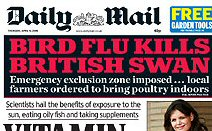

Thursday, April the 6th, 2006
back to: title, date or indexes
A few weeks ago, on 20th February, Hooting Yard provided full instructions for Saving Your Swan in the event of a bird flu pandemic. Clearly, the gritty northern folk who live in Cellardyke up in Scotland took absolutely no notice.

I love the way the Daily Mail manages to inject a note of patriotic fervour. We don't care tuppence about all those foreign birds, it implies, but this was a British swan, dammit! I hope they sent a reporter to hand-deliver a message of condolence to our bereaved monarch (see Frequently Asked Question, yesterday).